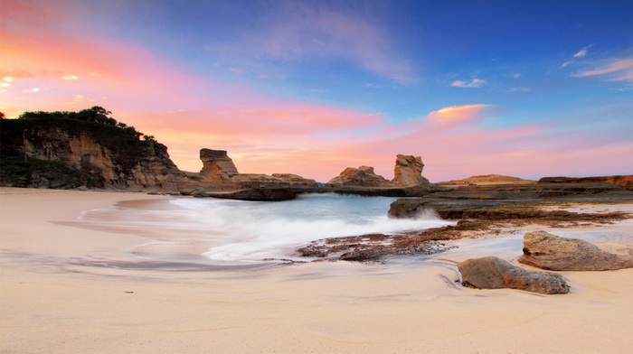
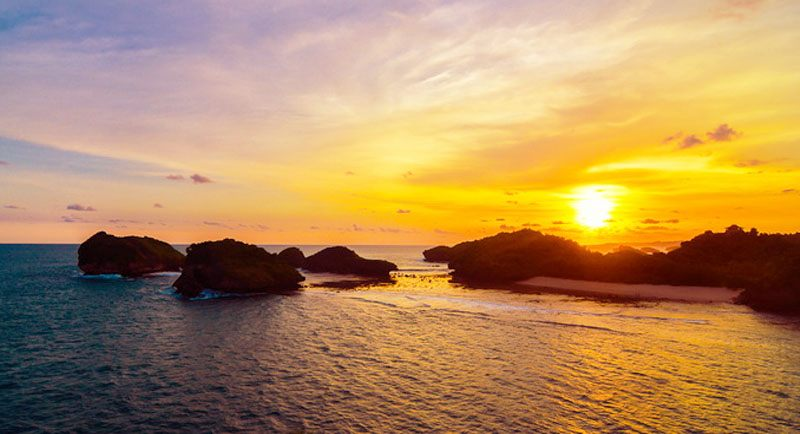
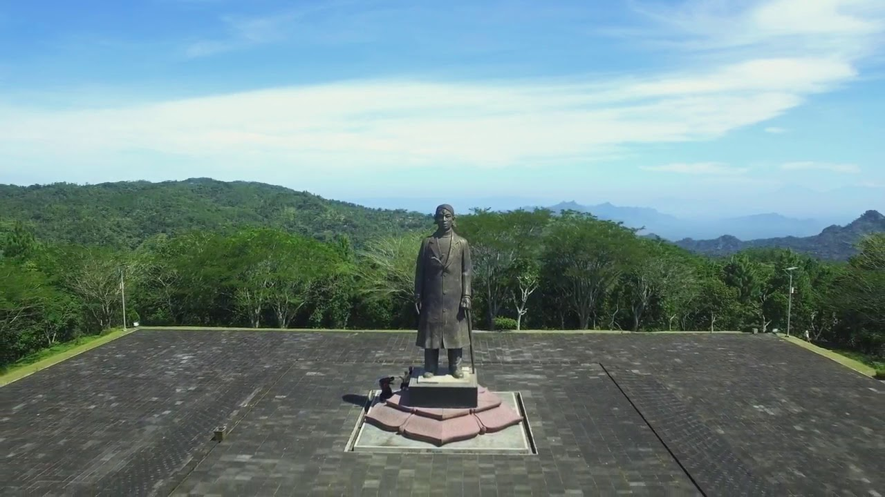
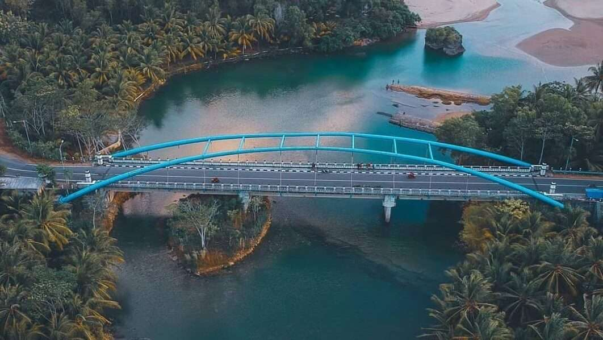
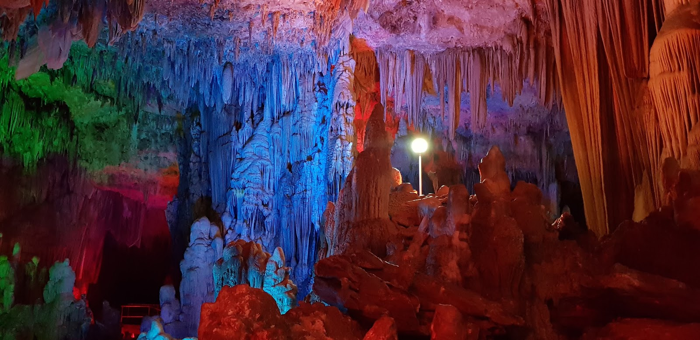
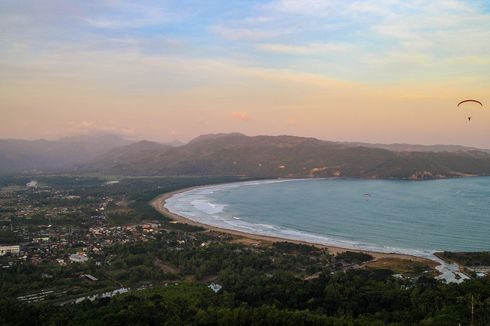

Pantai Klayar
Pantai Klayar berada di Kecamatan Donorojo, sekitar 35 km ke arah barat Kota Pacitan, dan dapat dicapai sekitar 60 menit dari kota pacitan. Pantai Klayar adalah pantai dengan karakteristik berupa hamparan pasir putih, air laut yang berwarna biru atau bisa juga disebut Hijau Tosca, batu karang yang mempesona, dan air mancur alami. Semua itu menjadikannya pantai dengan pesona alam indah di Pacitan, Jawa Timur. Yang menjadi ciri khas dan membuat Pantai ini indah adalah bentuk batuan karang Tanah Lot yang indah dengan bebatuannya, juga di pinggiran Pantai Klayar banyak gundukan yang memiliki ciri khas dari pantai lain yang berada di pacitan.
Pantai Kasap
Pantai Kasap adalah salah satu pesona pantai favorit di Pacitan. Pantai ini masih sangat alami. Pantai ini terletak di Dusun Ketro, Desa Watukarung, Kecamatan Pringkuku, Pacitan, Jawa Timur. Pantai ini memiliki pemandangan yang mirip dengan salah satu Pantai di Indonesia yang cukup populer yaitu Pantai Raja Ampat. Untuk Menikmati view yang mirip dengan Pantai raja Ampat. Anda harus naik ke bukit di sebelah pantai ini dengan melewati jalan setapak. Sesampainya di atas bukit Anda akan di manjakan dengan pemandangan yang cukup keren yaitu beberapa pulau kecil yang ada di tengah laut.
Monumen Jenderal Sudirman
Monumen Jenderal Sudirman dibangun di Desa Pakis Baru karena Sang Jenderal pernah bermarkas di sini. Monumen Jenderal Sudirman ialah berupa patung Sang Jenderal setinggi sekitar delapan meter. Untuk sampai ke patung, terdapat 70 anak tangga yang harus dilalui. Anak tangga pertama berjumlah 45, kedua berjumlah delapan, dan ketiga berjumlah 17. Lihat Foto Patung Jenderal Sudirman setinggi sekitar 8 meter di Monumen Jenderal Sudirman, Pakis Baru, Pacitan. Anak tangga itu bila disatukan adalah 17-8-45 yang melambangkan tanggal kemerdekaan Indonesia. Sesampainya di tempat patung, tampak lapangan yang begitu luas dan dikelilingi bagunan berbentuk persegi.
Jembatan Soge
Jembatan Soge merupakan salah satu ruas jalur lintas selatan setempat yang dibuat futuristik dengan desain konstruksi pipa lengkung di bagian atasnya sehingga menyerupai rangka kubah raksasa. Banyak wisatawan atau remaja lokal yang sengaja berhenti di sekitar jembatan Soge yang panjangnya 100 meter ini untuk sekadar berfoto atau menikmati pantai dari celah alur muara Sungai Soge. Jembatan ini sering dijadikan wisatawan sebagai tempat nongkrong dan berfoto ria, atau lebih banyak menikmati pemandangan lepas pantai Puring saat pagi atau senja hari. Dan memang saat – saat yang tepat mengabadikan momen indah di jembatan ini adalah saat senja hari, dan anda bisa menikmati lembayung senja yang elok. Setelah puas berfoto ria, anda pun bisa menikmati makanan kecil dan minuman yang tersaji oleh para pedagan
Goa Gong
Goa Gong terletak di Desa Bomo, Kecamatan Punung, Donorejo, sekitar 140 km arah selatan kota Solo atau 30 km arah Barat Daya Kota Pacitan. Dinamakan Goa Gong karena didalamnya terdapat sebuah batu yang jika dipukul akan menimbulkan bunyi seperti Gong yang ditabuh. Keindahan Gua Gong tak tertandingi oleh gua-gua lain di Pulau Jawa, bahkan ada yang menyebutkan bahwa Gua Gong adalah Gua terindah di Asia Tenggara. Memasuki goa Gong, anda akan disambut formasi stalaktit dan stalakmit yang indah. Dibantu penerangan yang cukup anda dapat masuk lebih dalam dan menyusuri lorong gua sepanjang 256 meter. Di ujung lorong, anda akan menemukan alasan kenapa Gua Gong disebut sebagai gua terindah se-Asia Tenggara. Sebuah ruangan yang membentuk kubah rakasa sepanjang 100 m, dengan lebar 15 hingga 40 meter dan tinggi antara 20-30 meter akan membuat anda berdecak kagum. Stalaktit dan stalakmit dengan aneka bentuk dan ukuran menghiasi seluruh penjuru ruangan.
Sentono Gentong
Sentono Gentong berlokasi di Desa Dadapan, Kecamatan Pringkuku. Pemandangan terbuka ke arah Teluk Pacitan tampak begitu menajkubkan. Terlihat pula pasir putih Pantai Teleng Ria hingga Pantai Pancer Dor bagaikan bulan sabit. Kota Pacitan juga tampak cantik dari ketinggian. Keindahannya kian berpadu dengan barisan perbukitan yang mengelilinginya bagai dinding raksasa. Awan tipis yang sesekali melayang di atasnya semakin menambah syahdu pemandangan.